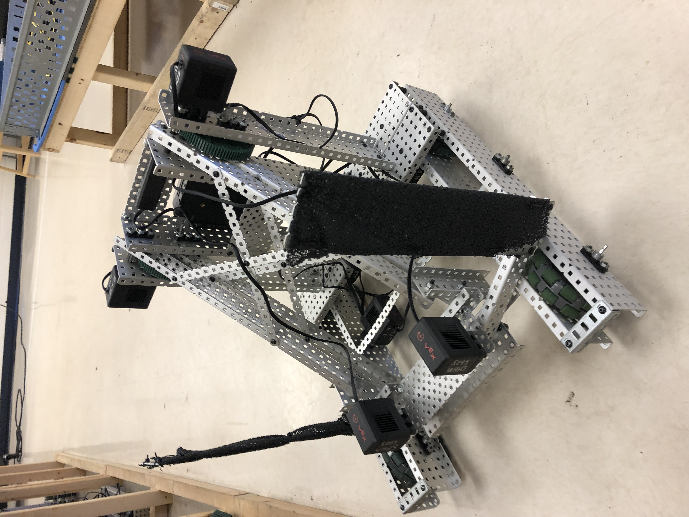

Design and Programming Team Member

Designed to compete in Vex Robotics Tower Takeover competition.
The competition scoring rewards stacking towers of blocks and placing blocks in elevated containers.
Three robots were designed. Two were robots that would use a grabber to lift up to four blocks at a time, and the other was a robot that loaded blocks onto a ramp, then tilted the ramp to vertical, leaving a stack of blocks. One of the grabber robots used a four-bar linkage for the grabber assembly movement, and the other used a six-bar linkage.